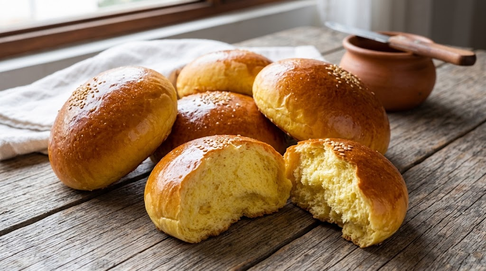
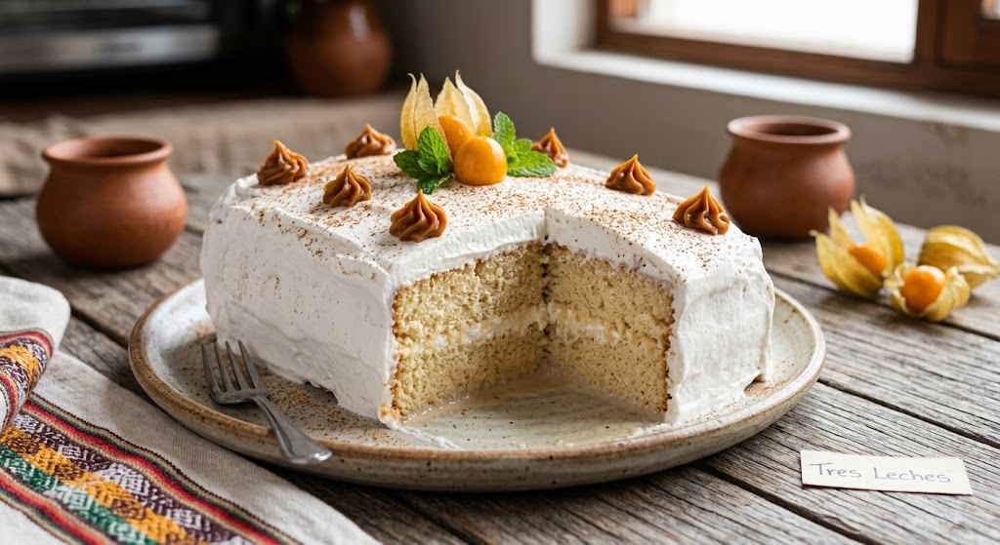

Pan caliente desde 1987
Somos una panadería familiar. Horneamos cada madrugada con recetas de tres generaciones.
Nuestros Productos
- Pan francés: S/ 0.30 la unidad
- Pan de yema: S/ 0.50 la unidad
- Chancay: S/ 0.60 la unidad
- Torta de chocolate: S/ 45.00 (entera)

Pan de yema, nuestro favorito de la casa. 
Torta de zanahoria, ideal para endulzar tu día.
Pedidos de tortas con 24 horas de anticipación.